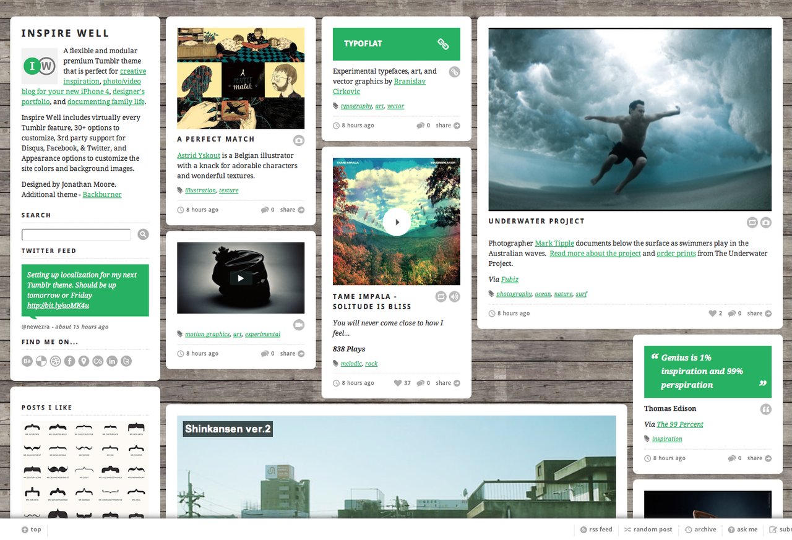

Inspire Well Premium Tumblr Theme
This morning my second premium theme, Inspire Well, finally went live! Inspire Well is a flexible and modular premium Tumblr theme that is perfect for creative inspiration, photo/video blog for your new iPhone 4, designer’s portfolio, and documenting family life.
With Inspire Well 1.0 you have complete creative freedom in customizing your site and control over the unique grid layout that lets you post small, medium and large posts. With 38 options in the Appearance menu you can upload your own background, change the theme colors, adjust the layout, and define icon links to 20 popular social sites. Inspire Well supports the full array of Tumblr functionality, 3rd-party support for Disqus, social sharing on Facebook and Twitter, lightbox for full-res post images and many more services planned in the future (free) updates.
Check out the primary demo site for Inspire Well as well as the demo sites showing how it’s used as a mobile photo blog, creative portfolio, and sharing family life.